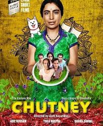
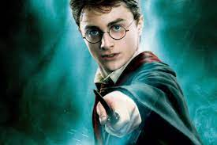
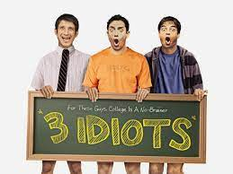

Chattni

It is available for free in Youtube
Fight Club

It is available on Prime Videos
Harry Potter

Not exactly a movie a movie but a complete series but the list would mentioning the series
Persuite of happieness

One of the best emotional movies ever made
Idiots
The movies is just connects to the emotions of all the engineering students in India